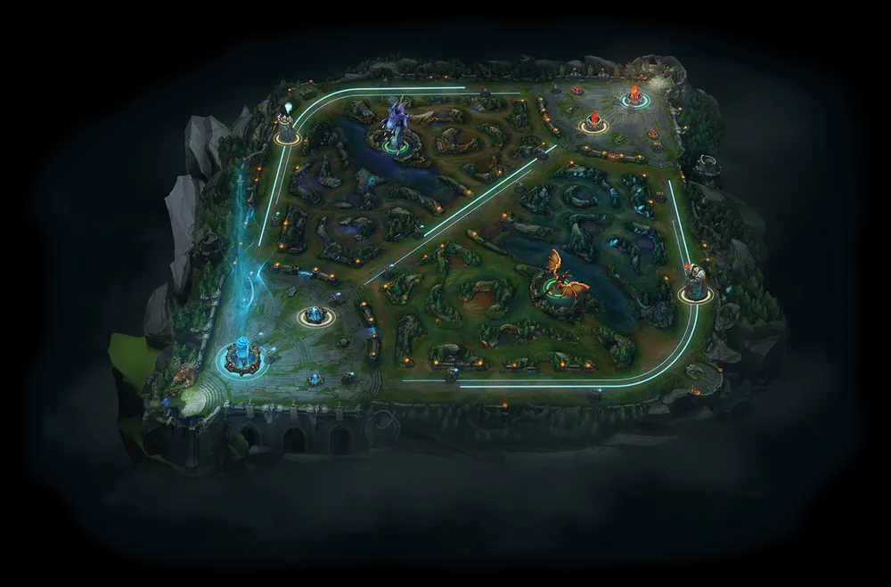
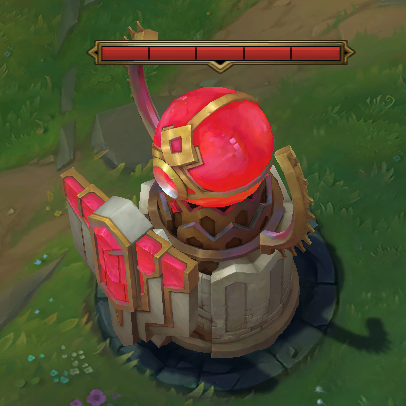
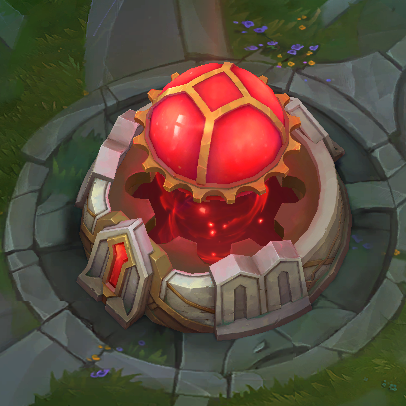
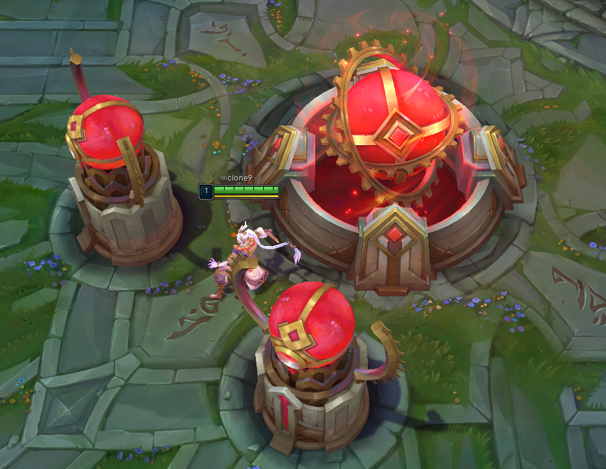
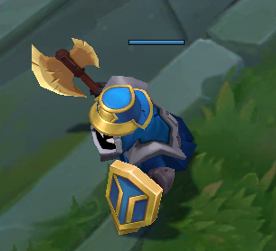
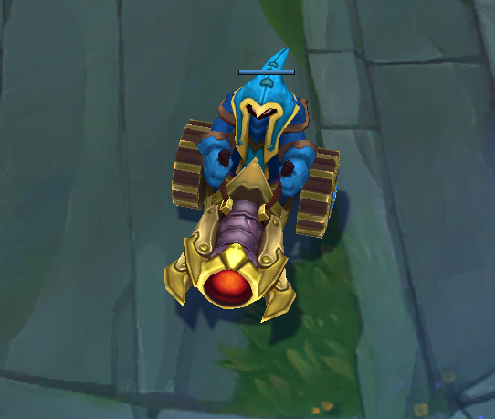
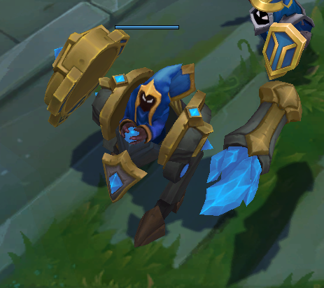

소환사의 협곡 (일반)
소환사의 협곡
Summoner's Rift

리그오브레전드의 가장 기본적인 맵으로 상징적인 맵중 하나입니다.
항상 5:5 이며 시작 레벨은 1 시작시 골드는500G 입니다.
형성되는 라인은 탑,정글,미드,원딜,서폿이며
평균 게임 시간은 15~30분 정도입니다.
1. 픽
수락화면에서 픽 화면으로 넘어갈때 빠른 타자속도와 선점을 하는것이 가장 중요합니다
주요 단어로는 본인이 가고싶은 라인의 초성을 누구보다 빠르게 채팅을 치셔야합니다.
ex) ㅌ, ㅁㄷ
★ tip ★ 상대방 컴퓨터 사양에 따라 못 볼 수도 있으니 도배는 필수

만일 선픽 싸움에서 먼저 라인을 선택하지 못 하였다면... 다른 라인을 가셔야 합니다.
2. 구조물
2-1. 타워

가장 많이 보게 될 타워입니다 우선 상당한 공격력을 가지고있습니다
1차포탑, 2차포탑, 3차포탑 (억제기포탑), 4차포탑(쌍둥이 포탑) 까지 총 갯수 5개이며
추후에 설명할 미니언을 방패 삼아 조금씩 갉아 먹어야 하는 구조물중 하나입니다.
2-2. 억제기

파괴시 후술할 슈퍼미니언 및 쌍둥이타워 더 나아가 승리를 위한 넥서스를 타격 할 수
있는
억제기입니다. 공격은 하지 않으며 3차타워를 파괴해야 타격할 수 있습니다.
시간이 지나면 재생성 되며 억제기 재생성 시간은 게임 진행 시간에 비례합니다.
게임이 시작하고 13분 안에 억제기가 파괴될 경우 4분 뒤에 재생성됩니다.
게임이 시작하고 13분~18분 사이에 억제기가 파괴되면 5분 뒤에 재생성됩니다.
게임이 시작하고 18분 뒤에 억제기가 파괴되면 6분 뒤에 재생성됩니다.
2-3. 넥서스

파괴시 최종 승리를 위한 상대방의 넥서스입니다.
앞서 본 억제기와 쌍둥이 타워를 제거해야만 파괴할 수 있으며
해당 건물이 마지막 건물인 만큼 상대가 거세게 저항합니다.
3. 오브젝트
오브젝트의 경우 선공몹 과 비선공몹으로 나뉩니다.
일반 페이지에선 가장 많이 볼 선공몹인 미니언만 다루며
비선공 몹(정글몹)의 경우 보다 자세한 사항은 랭크 페이지에서 다루겠습니다.
3-1. 근거리 미니언

타워를 철거하기 위한 가장 기본적인 미니언인 근거리 미니언입니다.
한라인당 3마리씩 소환되며 공격속도가 매우 빠르며 원거리 미니언보다 단단합니다
처치시 보통량의 골드와 경혐치를 지급합니다.
3-2. 원거리 미니언

근거리 미니언과 같이 기본적인 원거리 미니언입니다. 한라인당 3마리씩 소환되며
공격속도는 조금 느린편 이지만 공격력이 조금 센 편입니다
처치시 근거리 미니언보다 상대적으로 적은량의 골드와 경험치를 를 지급합니다.
3-3. 대포 미니언

3번째 라인마다 소환되는 대포 미니언입니다. 한라인당 1마리씩 소환되며
공격속도는 매우 느린편이지만 방어력이 준수하며 공격력이 상당히 강한편입니다
처치시 많은량의 골드와 경험치를 지급합니다.
3-4. 슈퍼 미니언

앞서 나온 억제기를 파괴하면 나오는 최상위 미니언
공격력과 방어력이 앞서나온 모든 미니언보다 강력하며
못큰 챔피언은 1:1을 질 수도 있다.
매우 많은량의 골드와 경험치를 지급하며
쌓이면 매우 위험하니 처치순위 1순위 입니다.